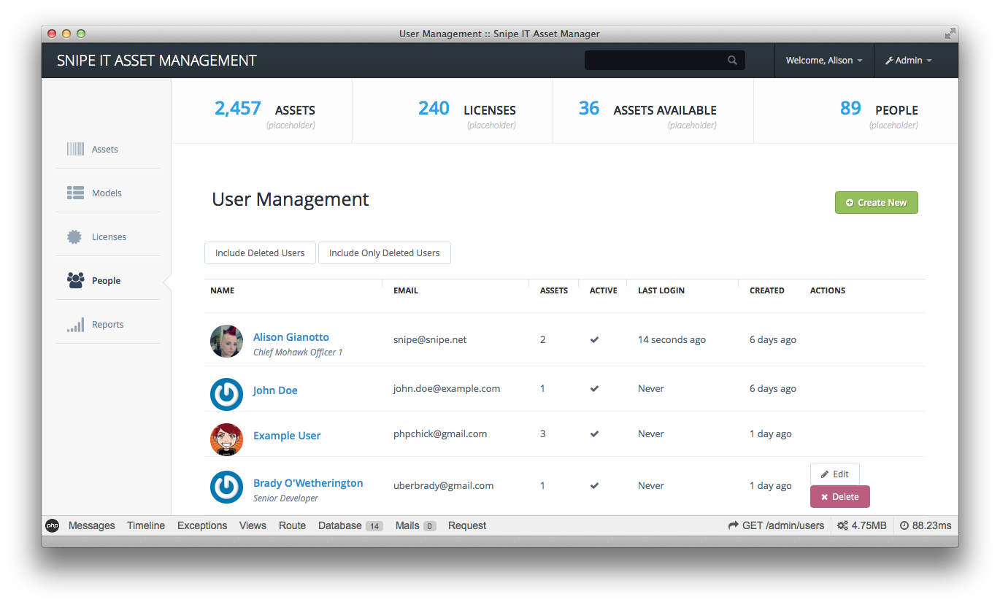
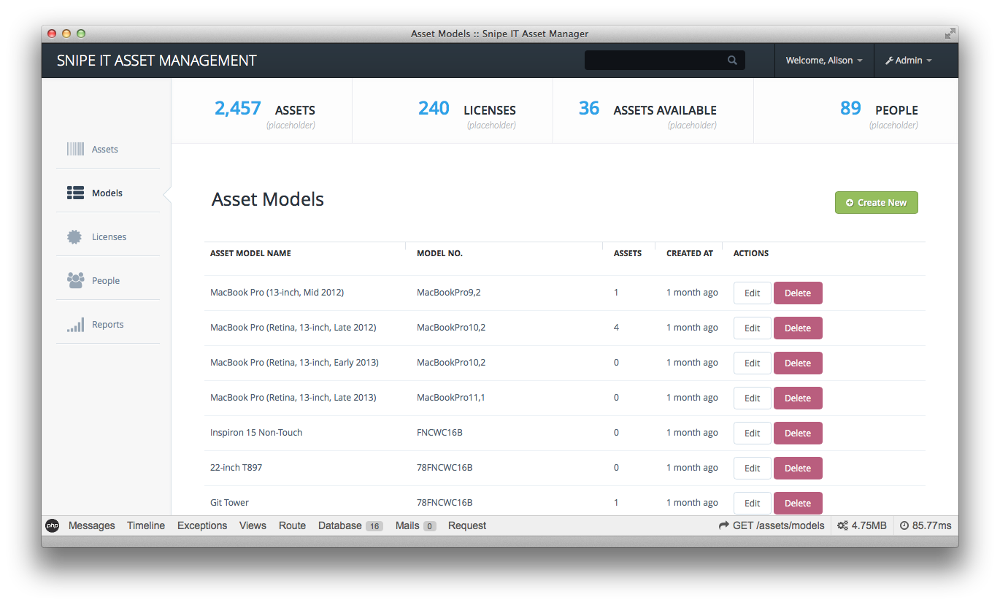
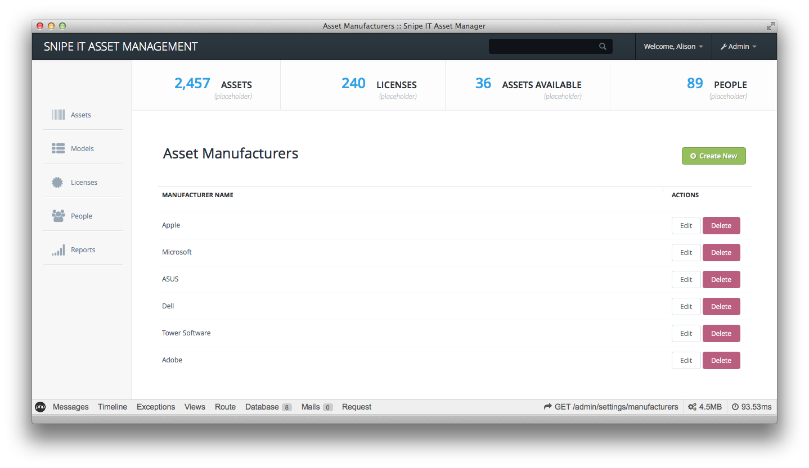

Welcome to GitHub Pages.
Snipe IT is a FOSS project for asset tracking, license management, and more. (Tracmor is also a nice option but the code is quite old and the framework it's built on even older, and it deals with things like inventory, which doesn't apply for me.)
Snipe IT is written in PHP, using Laravel 4 and Bootstrap. We're not at an MVP release just yet, but that's coming very soon.
That said, just because it's not ready for MVP release, that doesn't mean you can't poke around in the code. The develop branch is up to date with the current stuff we're working on. Once we have something stable, the master branch will be updated.
MVP Features Currently in Development
If you'd like to check in on progress and the roadmap, check out our Trello board here. It will always have the most up to date version of the backlog.
- asset models (example: Macbook Pro 13-inch, late 2013)
- assets belonging to asset models (example: Serial # 1234567890)
- categories (example: laptops, desktops, monitors, etc)
- basic depreciation reports (add purchase date, cost and invoice number to pull quick year-end reports on straight-line depreciation)
- multiple location support (if a laptop started in NY and ended up in the SF office, you can see the progression and depreciate from there)
- lookup by asset or by person (if you want to know who has a laptop with a specific serial, you can do that - or if you want to look up all assets belonging to one person, you can do that too)
- manage software licenses - track purchase date, and who each license is checked out to
Features Currently in Planning
- barcode generation (I don't actually need this, but I know some people do.)
- Users can request assets and then check them out when they're available (test devices, etc)
- More sophisticated ACL, to allow certain users access to reports, but read-only everywhere else, etc.
Screenshots
{kind=link}

{kind=link}
{kind=link}

{kind=link}
Support or Contact
Have questions about the Snipe IT app? Shoot me an email at snipe@snipe.net or ping me on Twitter @snipeyhead.